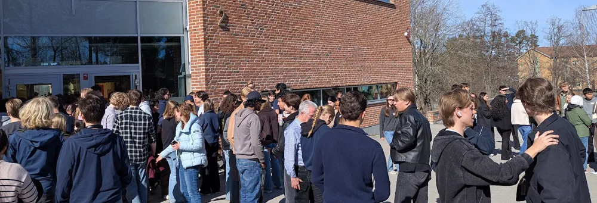

Debatt (ej satir)

Östra behöver mer programdagar som 1 april
Den första april firade Östra gymnasiet alla människors lika värde på en programdag. Under denna dag delades skolans elever in i nya klass-liknande grupper som kastade om tidigare rigida vängrupper. Jag anser att det här nedbrytandet av klass- och korridorbarriärer är en av de roligaste sakerna som har hänt på Östra på länge.
Programdagar är alltid underhållande till en viss nivå. Tja, det är i alla fall alltid en undanflykt från den tråkiga lektionsrutin alla elever hjälplöst följer. Jag, som många andra, var först skeptisk till idén om en föreläsningfylld dag med fokus på alla människors lika värde. När lärare säger att någonting är viktigt för demokratin är det sällan särskilt roligt, men trots dessa skeptiska förväntningar blev jag positivt överraskad över hur dagen blev. Framför allt tror jag att dessa aktiviteter blev mycket roligare när de upplevdes tillsammans med nya personer man aldrig pratat med förut. Rektorns påpekande om lunchgrupper reflekterar både skolans framgång i att alla ska ha någon att sitta bredvid men också att skolans vängrupper desperat behöver skakas om då och då.
Jag lockades till Östra gymnasiet på grund av dess lokaler, och centralt till vår skolas identitet är att korridorerna delar in eleverna. Korridorerna ger trygghet och binder vänner närmare varandra, men de skapar också en segregation mellan elever som sällan tillåter vängrupper att spridas över korridor-gränser. Även individuella val-kurserna tillåter sällan vänskapsbildande då många är strikta med vilka de träffar utanför skolan. Det är därför 1 april var så viktig – vi fick en genuin anledning att prata med personer vi aldrig hade pratat med annars.
Alla kommer inte dela min åsikt om det här, och det är jag medveten om. Vissa satt tysta i hörnet av klassrummet och nöjer sig med sina två vänner de haft sedan mellanstadiet. Andra påpekar att man faktiskt inte träffar nya vänner på en dag eller att de inte har interagerat med någon från gruppen sedan dess. Det är sant att man inte träffar nya vänner, vänskaper byggs upp över tid, och vi lever sannerligen i en otroligt anti-social-post-covid värld där det är extremt svårt att kommunicera med medmänniskor man inte har en direkt koppling till, men varför bör vi inte försöka. Varför ska vi nöja oss med det bekväma. Man kan vårda gamla vänskaper samtidigt som man vill prata med nya människor. Gymnasiet är till för att ge oss en utbildning, förbereda oss för livet och skapa vänner – allt det gav 1 april oss.
För att avsluta kan ingen enskild individ bryta en norm. Östra gymnasiet är en fantastisk skola där man får vänner för livet, men varför behöver de vännerna ha valt samma program som du. 1 april var ett tydligt exempel på att skolan kan skapa bekantskaper över korridorsgränser. Det här vill jag se mer av och om någon från skolans ledning läser det här: skapa fler tillfällen som tvingar ihop elever.